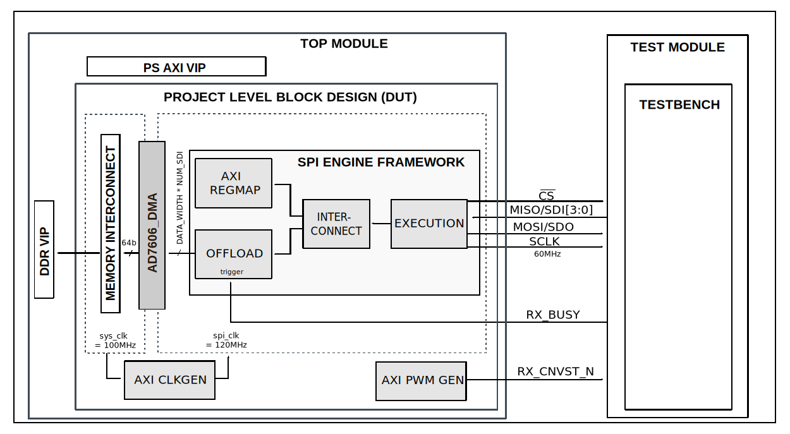

AD7606
Overview
The purpose of this testbench is to validate the serial interface functionality of the projects/ad7606x_fmc reference design.
The entire HDL documentation can be found here AD7606x-FMC HDL project.
Block design
The testbench block design includes part of the AD7606x-FMC HDL reference design, along with VIPs used for clocking, reset, PS and DDR simulations.
Block diagram
The data path and clock domains are depicted in the below diagram:
{kind=link}
Configuration parameters and modes
The following parameters of this project that can be configured:
DEV_CONFIG: defines the device: Options: 0 - AD7606B, 1 - AD7606C-16, 2 - AD7606C-18
EXT_CLK: defines the usage of an external clock: Options: 0 - without external clock, 1 - with external clock
INTF: defines the interface type: Options: 0 - Parallel, 1 - Serial
NUM_OF_SDI: defines the number of MOSI lines of the SPI interface: Options: 1 - Interleaved mode, 2 - 1 lane per channel, 4 - 2 lanes per channel, 8 - 4 lanes per channel
Build parameters
The parameters mentioned above can be configured when starting the build, like in the following example:
user@analog:~$
make DEV_CONFIG=0 EXT_CLK=0 INTF=0 NUM_OF_SDI=2
but we recommend using the already tested build configuration modes, that can be
found in the cfg section.
Configuration files
The following configuration files are available:
Configuration mode
Parameters
DEV_CONFIG
EXT_CLK
INTF
NUM_OF_SDI
cfg1
0
0
0
1
cfg2
1
0
0
1
cfg3
2
0
0
1
Tests
The following test program file is available:
Test program |
Usage |
|---|---|
test_program |
Tests the serial interface capabilities. |
Available configurations & tests combinations
The test program is compatible with all of the above mentioned configurations.
CPU/Memory interconnect addresses
Below are the CPU/Memory interconnect addresses used in this project:
Instance |
Address |
|---|---|
spi_ad7616_axi_regmap |
0x44A0_0000 |
axi_ad7606x_dma |
0x44A3_0000 |
spi_clkgen |
0x44A7_0000 |
ad7606_pwm_gen |
0x44B0_0000 |
Interrupts
Below are the Programmable Logic interrupts used in this project:
Instance name |
HDL |
|---|---|
axi_ad7606_dma |
13 |
spi_ad7606 |
12 |
Test stimulus
The test program is structured into several tests as follows:
Environment Bringup
The steps of the environment bringup are:
Create the environment
Start the environment
Start the clocks
Assert the resets
Sanity Test
This test is used to check the communication with the AXI REGMAP module of the AD7606 SPI Engine interface, by reading the core VERSION register, along with writing and reading the SCRATCH register.
SIMPLE Configuration Test
The adc_config_SIMPLE_test is used for verifying the mode 0 of the ADC.
The steps of this test are:
Get the ADC common core out of reset
Set & read the ADC_CONFIG WR & CTRL registers of the ADC_COMMON
Read data on the rx_db_o port
Set HDL config mode 0
CRC Configuration Test
The adc_config_CRC_test is used for verifying the mode 1 of the ADC.
The steps of this test are:
Get the ADC common core out of reset
Set CRC and static data setup
Set & read the ADC_CONFIG WR & CTRL registers of the ADC_COMMON
Read data on the rx_db_o port
Set HDL config mode 1
STATUS Configuration Test
The adc_config_STATUS_test is used for verifying the mode 2 of the ADC.
The steps of this test are:
Get the ADC common core out of reset
Set STATUS and static data setup
Set & read the ADC_CONFIG WR & CTRL registers of the ADC_COMMON
Read data on the rx_db_o port
Set HDL config mode 2
STATUS CRC Configuration Test
The adc_config_STATUS_CRC_test is used for verifying the mode 3 of the ADC.
The steps of this test are:
Get the ADC common core out of reset
Set CRC and static data setup
Set STATUS and static data setup
Set & read the ADC_CONFIG WR & CTRL registers of the ADC_COMMON
Read data on the rx_db_o port
Set HDL config mode 3
Building the test bench
The testbench is built upon ADI’s generic HDL reference design framework. ADI does not distribute compiled files of these projects so they must be built from the sources available here and here, with the specified hierarchy described Set up the Testbenches repository. To get the source you must clone the HDL repository, and then build the project as follows:.
Linux/Cygwin/WSL
Example 1
Build all the possible combinations of tests and configurations, using only the command line.
user@analog:~$
cd testbenches/project/ad7606x
user@analog:~/testbenches/project/ad7606x$
make
Example 2
Build all the possible combinations of tests and configurations, using the Vivado GUI. This command will launch Vivado, will run the simulation and display the waveforms.
user@analog:~$
cd testbenches/project/ad7606x
user@analog:~/testbenches/project/ad7606x$
make MODE=gui
Example 3
Build a particular combination of test and configuration, using the Vivado GUI. This command will launch Vivado, will run the simulation and display the waveforms.
user@analog:~$
cd testbenches/project/ad7606x
user@analog:~/testbenches/project/ad7606x$
make MODE=gui CFG=cfg1 TST=test_program
The built projects can be found in the runs folder, where each configuration
specific build has it’s own folder named after the configuration file’s name.
Example: if the following command was run for a single configuration in the
clean folder (no runs folder available):
make CFG=cfg1
Then the subfolder under runs name will be:
cfg1
Resources
More information
Support
Analog Devices, Inc. will provide limited online support for anyone using the reference design with ADI components via the EngineerZone FPGA reference designs forum.
It should be noted, that the older the tools’ versions and release branches are, the lower the chances to receive support from ADI engineers.